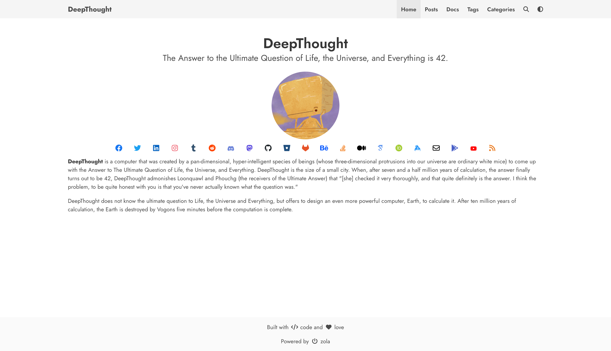

A simple blog theme focused on writing powered by Bulma and Zola.



You need static site generator (SSG) Zola installed in your machine to use this theme follow their guide on getting started.
Follow zola's guide on installing a theme.
Make sure to add theme = "DeepThought" to your config.toml
Check zola version (only 0.9.0+) Just to double-check to make sure you have the right version. It is not supported to use this theme with a version under 0.14.1.
Go into your sites directory and type zola serve. You should see your new site at localhost:1111.
NOTE: you must provide the theme options variables in config.toml to serve a functioning site
Zola already has great documentation for deploying to Netlify or Github Pages. I won't bore you with a regurgitated explanation.
Following options are available with the DeepThought theme
# Enable external libraries
[extra]
katex.enabled = true
katex.auto_render = true
chart.enabled = true
mermaid.enabled = true
galleria.enabled = true
navbar_items = [
{ code = "en", nav_items = [
{ url = "$BASE_URL/", name = "Home" },
{ url = "$BASE_URL/posts", name = "Posts" },
{ url = "$BASE_URL/docs", name = "Docs" },
{ url = "$BASE_URL/tags", name = "Tags" },
{ url = "$BASE_URL/categories", name = "Categories" },
]},
]
# Add links to favicon, you can use https://realfavicongenerator.net/ to generate favicon for your site
[extra.favicon]
favicon_16x16 = "/icons/favicon-16x16.png"
favicon_32x32 = "/icons/favicon-32x32.png"
apple_touch_icon = "/icons/apple-touch-icon.png"
safari_pinned_tab = "/icons/safari-pinned-tab.svg"
webmanifest = "/icons/site.webmanifest"
# Author details
[extra.author]
name = "DeepThought"
avatar = "/images/avatar.png"
# Social links
[extra.social]
email = "<email_id>"
facebook = "<facebook_username>"
github = "<github_username>"
gitlab = "<gitlab_username>"
keybase = "<keybase_username>"
linkedin = "<linkedin_username>"
stackoverflow = "<stackoverflow_userid>"
twitter = "<twitter_username>"
instagram = "<instagram_username>"
behance = "<behance_username>"
google_scholar = "<googlescholar_userid>"
orcid = "<orcid_userid>"
mastodon_username = "<mastadon_username>"
mastodon_server = "<mastodon_server>" (if not set, defaults to mastodon.social)
# To add google analytics
[extra.analytics]
google = "<your_gtag>"
# To add disqus comments
[extra.commenting]
disqus = "<your_disqus_shortname>"
# To enable mapbox maps
[extra.mapbox]
enabled = true
access_token = "<your_access_token>"If you want to have a multilingual navbar on your blog, you must add your new code language in the languages array in the config.toml file.
NOTE: Don't add you default language to this array
languages = [
{code = "fr"},
{code = "es"},
]And then create and array of nav item for each language:
NOTE: Include your default language in this array
navbar_items = [
{ code = "en", nav_items = [
{ url = "$BASE_URL/", name = "Home" },
{ url = "$BASE_URL/posts", name = "Posts" },
{ url = "$BASE_URL/docs", name = "Docs" },
{ url = "$BASE_URL/tags", name = "Tags" },
{ url = "$BASE_URL/categories", name = "Categories" },
]},
{ code = "fr", nav_items = [
{ url = "$BASE_URL/", name = "Connexion" },
]},
{ code = "es", nav_items = [
{ url = "$BASE_URL/", name = "Publicationes" },
{ url = "$BASE_URL/", name = "Registrar" },
]}
]en:

fr:

es:

This theme contains math formula support using KaTeX,
which can be enabled by setting katex.enabled = true in the extra section
of config.toml.
After enabling this extension, the katex short code can be used in documents:
{{ katex(body="\KaTeX") }} to typeset a math formula inlined into a text,
similar to $...$ in LaTeX{% katex(block=true) %}\KaTeX{% end %} to typeset a block of math formulas,
similar to $$...$$ in LaTeXOptionally, \\( \KaTeX \\) / $ \KaTeX $ inline and \\[ \KaTeX \\] / $$ \KaTeX $$
block-style automatic rendering is also supported, if enabled in the config
by setting katex.auto_render = true.
Zola use Elasticlunr.js to add full-text search feature.
To use languages other than en (English), you need to add some javascript files. See the Zola's issue #1349.
By placing the templates/base.htmlon your project and using the other_lang_search_js block, you can load the required additional javascript files in the right timing.
e.g. templates/base.html
{%/* extends "DeepThought/templates/base.html" */%} {%/* block other_lang_search_js */%}
<script src="{{ get_url(path='js/lunr.stemmer.support.js') }}"></script>
<script src="{{ get_url(path='js/tinyseg.js') }}"></script>
<script src="{{/* get_url(path='js/lunr.' ~ lang ~ '.js') */}}"></script>
<script src="{{ get_url(path='js/search.js') }}"></script>
{%/* endblock */%}More detailed explanations are aound in elasticlunr's documents.
Contributions are what make the open source community such an amazing place to be learn, inspire, and create. Any contributions you make are greatly appreciated.
Distributed under the MIT License. See LICENSE for more information.
Ratan Kulshreshtha - @RatanShreshtha - ratan.shreshtha[at]gmail.com
Project Link: https://github.com/RatanShreshtha/DeepThought
Use this section to mention useful resources and libraries that you have used in your projects.